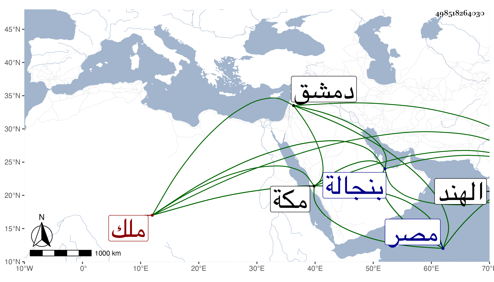

0902Sakhawi.DawLamic.ITO20230111-ara1.EIS1600.498518264030
Biography ID: 498518264030
770
محمد بن فندو الجلال أبو المظفر ملك بنجالة من الهند ووالد المظفر أحمد الماضي ويعرف بكاس . كان أبوه كافرا فثار عليه الشهاب مملوك سيف الدين حمزة ابن غياث الدين أعظم شاه بن اسكندرشاه بن شمس الدين فغلبه علي بنجالة وأسره فبادر ابنه هذا إلى الإسلام وتسمى محمدا وثار على الشهاب فانتزع منه البلاد ولحسن إسلامه أقام شعار الإسلام وجدد ما خربه أبوه من المساجد ونحوها وتقلد لأبي حنيفة وبنى مآثر بل عمر بمكة مدرسة هائلة وراسل الأشرف برسباي صاحب مصر بهدية واستدعى العهد من الخليفة فجهز له مع التشريف على يد شريف فلبس التشريف ثم أرسل للخليفة هدية وكانت هداياه متواصلة بالعلاء البخاري بمصر وبدمشق . مات في ربيع الآخر سنة سبع وثلاثين واستقر بعده في المملكة ابنه وهو ابن أربع عشرة سنة رحمه الله . ذكره شيخنا في إنبائه وغيره .
